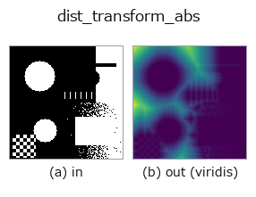

region op• 数据种类:region → image
• 调用:fullseye.apply(img, "dist_transform_abs", a=0.5, b=0.5)(2-D 的模型是一张图 + 两个标量旋钮 a,b∈[0,1])
• HALCON 对应:distance_transform(其含义与参数可参考 HALCON 手册)
• GPU:无(仅 CPU 参考实现)

*图为在 128×128 合成输入上实际运行的输出。左为输入，右为输出。点云以俯视散点显示(亮度 = z)，一维序列为折线，体数据为沿 z 的最大值投影，视频为中间帧，复数图像为幅值；无法成像的返回值直接显示数值。*
*输出以类 viridis 伪彩色显示(深紫 = 小，黄 = 大)，便于读取距离、相位、方向、深度这类“量的场”。*
扫描旋钮 a(0.1 / 0.5 / 0.9，另一旋钮取默认):
▸ dist_transform_abs: 旋钮 a 扫描 (文档网站)
扫描旋钮 b(0.1 / 0.5 / 0.9，另一旋钮取默认):
▸ dist_transform_abs: 旋钮 b 扫描 (文档网站)
阶段(前置算子 → 本算子，从左到右):
▸ dist_transform_abs: 处理阶段 (文档网站)
换别的图像(合成场景 / 照片 / 硬币。上排为输入，下排为对应输出。旋钮取默认):
▸ dist_transform_abs: 其他输入图像 (文档网站)
不归一化的绝对像素距离变换。相当于 HALCON 的 distance_transform（Compute the distance transformation of a region.）。
a 选择距离类型：a < 1/3 为欧氏距离，1/3 <= a < 2/3 为城市街区（L1），其余为棋盘（L∞）。b < 0.5 对每个前景像素返回到最近背景像素的距离；b >= 0.5 对每个背景像素返回到最近前景像素的距离。输出为 float64 图像，与 dist_transform 不同，不按图像内最大值归一化（被背景包围的 3×3 与 9×9 正方形的中心分别为 2 与 5）。例：_dist_transform_abs(np.pad(np.ones((3, 3)), 1), 0, 0)[2, 2] 为 2.0。
★2026-11-05（对抗性验证 第 2 轮 P4b）之前，这个例子写的是 np.ones((3, 3))（没有背景），实际的值不是 2.0 而是 2.236（即下面的退化输入）。
当图像中不存在要测量距离的对象(b < 0.5 时没有任何背景像素,b >= 0.5 时没有前景)时, 距离没有定义(无穷大)。此时返回全为 0("没有距离场")——空区域是合法的输入(b >= 0.5 的全背景以及 b < 0.5 的全前景都是),因此不作为异常。不要把这个 0 当作距离来读:
对象是否存在,请在输入侧用 region.any() / (~region).any() 确认。两个方向都是常数,因此与图像的翻转、旋转可交换。2026-11-05(对抗性验证 第 2 轮 P4)之前,distance_transform_edt 返回的是仿佛对象位于图像外 (-1, 0) 处的斜坡(3×3 上为 1〜3.6),cdt 返回全为 -1 的值。
HALCON 的参考算子返回 int4 近似值。本 op 返回精确的 float64 距离，不是兼容 API。
异常:
FsValueError: 图像含有 NaN / inf。
• 示例数据目录(下载 URL / 许可证) —— 2-D 用 skimage.data(BSD/公有领域)加合成图,3-D 给出真实数据源(Stanford/PDS 等)的下载 URL。
• 算子来历与参考文献 —— 该算子族所依据的研究/方法出处。
• 算法的正典(作者、年份)与用途见上面的族使用指南。
下面的程序已确认可以运行(与图相同的输入)。在 Studio 帮助中，此块会变成按钮，可当场加载并运行。
threshold 0.50 0.50 dist_transform_abs 0.50 0.50
• gallery2d_region — py -3.11 examples/gallery2d_region.py
image 作为输入)identity · gaussian · mean_box · mean_box_wh · bilateral · kuwahara · unsharp · median
region)reg_erode · reg_dilate · reg_open · reg_close · fill_holes · select_largest · remove_small · invert_region
*Provenance: ops.py — 2D 算子登记表。本条目由 tools/opdocs.py md 自动生成(请勿手工编辑)。*
© 2026 Kazufumi Furuse — Fullseye operator documentation. Licensed under Apache-2.0.